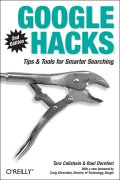

|  |
| About IR |
| Editors |
| Author instructions |
| Copyright |
| Author index |
| Subject index |
| Search |
| Reviews |
| Register |
| Home |
Calishain, T. and Dornfest, R. Google hacks: tips and tools for smarter searching. (2nd ed.) Sebastopol, CA: O'Reilly, 2005. xxxiv, 443, [1] p. ISBN 0-596-00918-6. $29.95 £20.95
The first edition of this book was reviewed in 2003, and a good deal has happened on the Google front since then. Not surprisingly, therefore, a new edition is thought worthwhile. There are now 130 more pages, although there are still only 100 'hacks'. Figuring out how many new hacks there are, however, is quite a problem, partly because the structure of the book has been completely re-organized, so that many of the previous hacks have been scattered over different chapters, partly because some have been combined under one heading, and partly because the new introductions to some chapters embody previous hacks. On top of which, space has had to be found for new Gmail hacks, and this has been done by getting rid of one chapter that was devoted to 'Google games'. Locating specific tips isn't helped by the fact that there have been some subtle changes: e.g., 'Generating Google AdWords' has become 'Generate Google AdWords' - it is quite easy to miss these when scanning contents pages.
However, the new structure is entirely satisfactory, although the chapter titles are not always very explicit. We have: Web, Advanced Web, Images, News and groups, Add-ons, Gmail, Ads, Webmastering and Programming Google. As with the first edition, many of the hacks require access to the server, to load CGI scripts, and some demand a knowledge of the Google API, but there are many that the ordinary user of Google will be able to derive benefit from.
For example, if you are a Gmail user, you may not have realised that you can download your mail into a local file on your hard disc. This requires downloading a utility , which is run from the DOS command line of Windows, and it is labelled as 'Advanced', but it is possible. There are other hacks that require downloads, or employ Websites other than Google—quite a lot of them, in fact. One that took my fancy is the Centuryshare Calculator, but this appears not to work at the moment. The idea is that you put in a search term, click on a drop-down menu item "1950-2000" and the system will draw a graph of the popularity of that term over time. There's a nice graph in the book, but nothing appeared on my screen in either Firefox or Internet Explorer.
Rather more straightforward are the pages that tell you about features of Google that you may never have seen before, like the 'daterange' feature, which enables you to search for pages withing certain dates. Unfortunately, you have to express the dates in Julian form, thus, not 1 July, 2004 to 31 December, 2004, but 'daterange:2453187.5-2453370.5'. There are sites where you can convert from normal dates to Julian dates, but it is all a little 'fiddly' and only to be embarked upon if the date range is of very great interest. For example, you might be interested in picking up all the items about the French rejection of the EU constitution and limiting the search to a couple of days could focus things.
Overall, this is a useful update for the 2003 edition and those with the necessary coding skills, in particular, will find much to intrigue them. Fortunately, O'Reilly have all of the example code online.
Professor T.D. Wilson
Editor-in-Chief
June, 2005
How to cite this review
Wilson, T.D. (2005). Review of: Calishain, T. and Dornfest, R. Google hacks: tips and tools for smarter searching. (2nd ed.) Sebastopol, CA: O'Reilly, 2005. Information Research, 10(4), review no. R179 [Available at: http://informationr.net/ir/reviews/revs179.html]